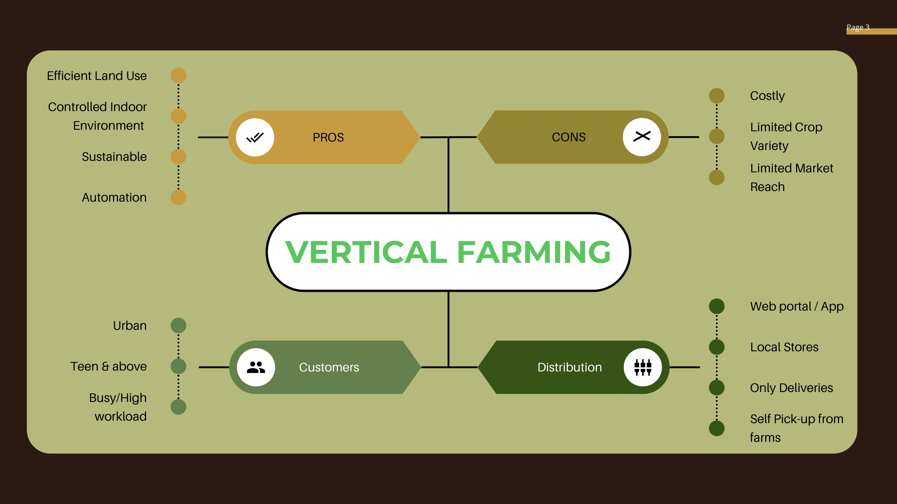
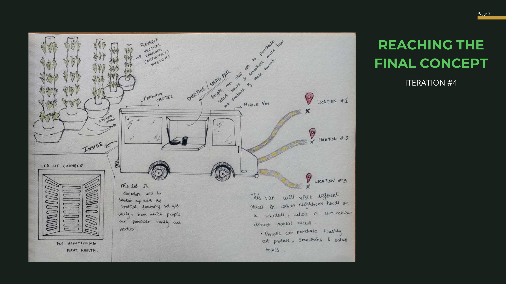
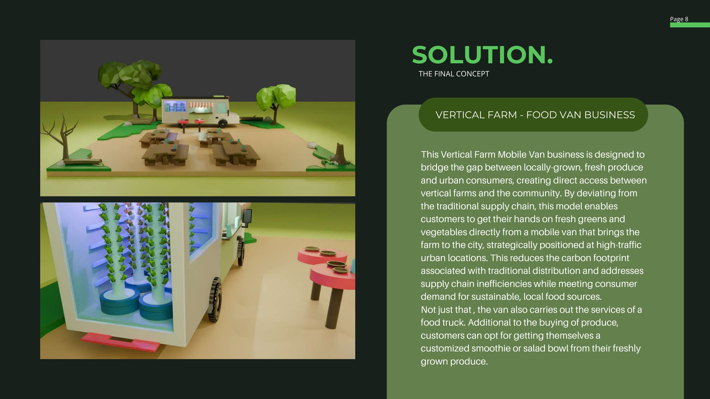
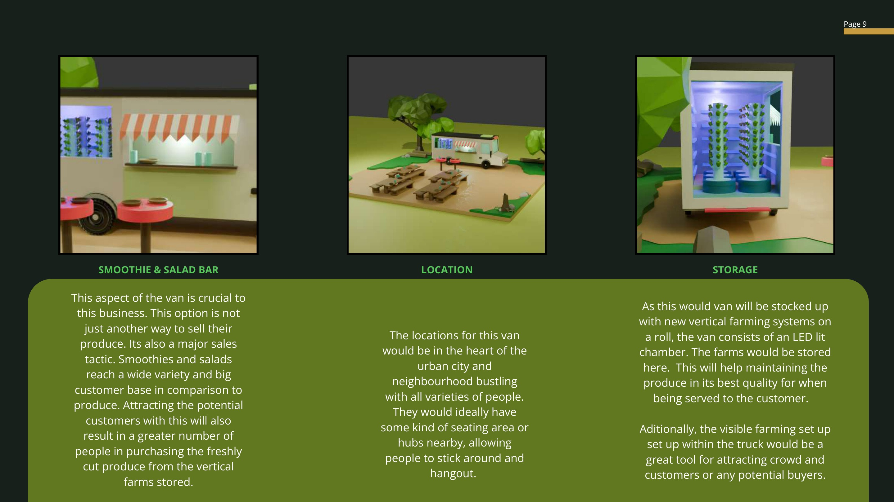
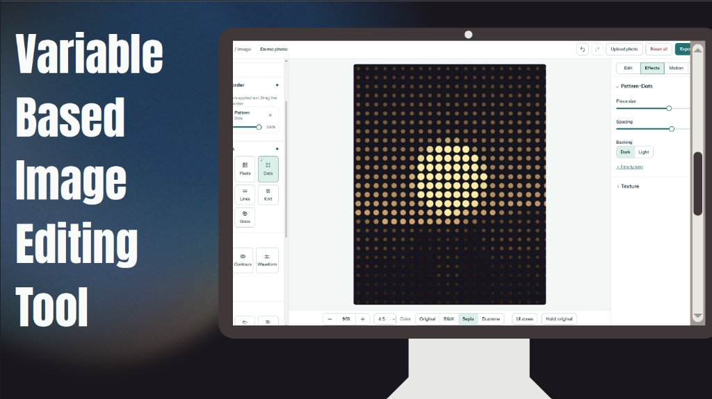
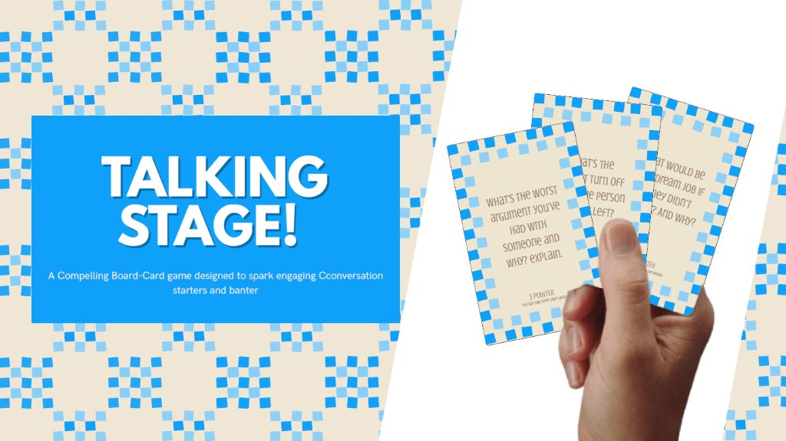

ISL Studio
A working Indian Sign Language practice platform combining webcam gesture recognition and interactive feedback for beginner ISL learners.

This Vertical Farm Mobile Van business helps reduce grocery store trips for young, busy working professionals in dense urban neighborhoods by bringing fresh, locally grown produce straight to their community, while giving regional vertical farms a direct, reliable market.
Urban markets are where consumer demand and purchasing power are the highest. However, vertical farms are typically built in secluded peri-urban areas away from bustling city centers. Due to this geographic separation, growers face severe hurdles in reaching customers directly and sustaining viable operations.
The core systemic bottlenecks include:
An initial analysis of urban grocery commuting habits, retail markups, and cold-chain logistics revealed that transit is the single most inefficient phase of perishable green distribution. Evaluating speculative service models led to identifying mobile decentralized distribution as the optimum intervention.
To evaluate potential directions, we mapped the operational pros and cons of vertical farming systems against urban customer lifestyle constraints and distribution models.

Developing Freshline involved exploring multiple service models to address the core challenges of urban market accessibility, supply-demand coordination, and perishable inventory management. Through three distinct concept iterations, the design evolved from a passive delivery point into an active, interactive mobile experience.
Synthesizing insights from the previous iterations led to the finalized service model: a standalone, self-contained mobile vertical farming van that integrates live crop maintenance, food preparation, and immediate customer fulfillment.

The proposed solution is a mobile vertical farm housed inside a specially modified delivery van. Freshline bridges the gap between regional agricultural producers and city dwellers by driving directly into high-density commercial and residential neighborhoods on fixed recurring schedules.
By bringing live, harvesting-ready crops directly to customers, Freshline minimizes food miles, eliminates conventional cold-chain storage degradation, and creates a vibrant neighborhood destination for farm-fresh greens and on-demand cold-pressed juices.

The service model is structured across clear customer touchpoints, connecting daily consumer routines with efficient agricultural fulfillment.

My final choice for the "form" of this problem statement was to develop a physical solution; a Mobile Van, rather than opting for a digital one. Digital spaces like web portals or apps are highly crowded, with numerous competitors offering similar services, making it unlikely that customers would navigate through hundreds of web pages to land on the one. Adding on to that, many local farmers likely would not be well-versed in technology, and adapting to a digital model could pose several challenges for them.
The completed Freshline concept visualizes an electric mobile vertical farming van designed for urban deployment. From its specialized aeroponic growing technology to its compact, human-scale customer service interface, the design presents a decentralized, sustainable alternative to industrial agricultural supply chains.
Freshline demonstrates how speculative service design can tackle urban food deserts, shorten agricultural supply chains, and build lasting direct relationships between peri-urban farmers and city neighborhoods. By shifting from static physical stores or high-overhead apps to a mobile, sensory food-van model, the project transforms sustainable food distribution into an accessible, communal street experience.
A working Indian Sign Language practice platform combining webcam gesture recognition and interactive feedback for beginner ISL learners.

An interactive image-making tool exploring variable-based visuals, creative experimentation and flexible visual treatments.

A Financial Literacy App designed to help young adults to know about finance literacy through games, fun articles, blogs, and reels.

A board game for 2–5 players that encourages people to get to know one another through questions, strategy and play.

A podcast and companion platform proposing small, intentional changes as an alternative to the pressure of instant self-improvement.